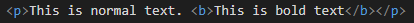

This element specifies bold text without any extra importance.
According to the specification the b t ag should be used as a last resort. when no other tag is more appopriate. H1-h6 comes first, em emphasized text comes next, then strong important text and then mark for marked/ highlighted text.
This is normal text. This is bold text
This is how its coded:
The global attributes are supported.
The event attributes are supported